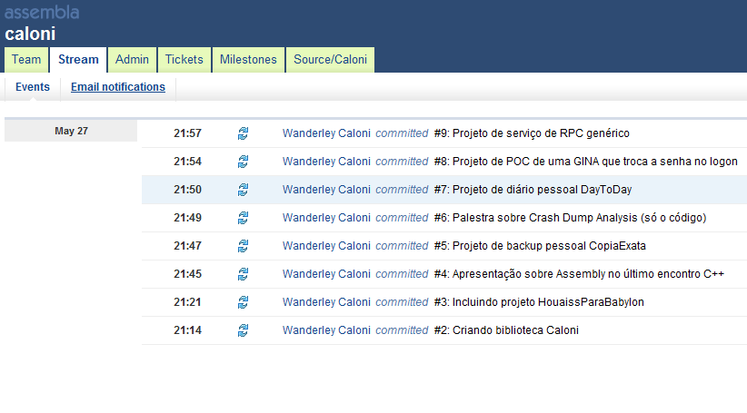

# Sem reflection
Caloni, 2011-05-18 <computer> [up] [copy]Em C++ não temos (ainda) a possibilidade de listarmos, por exemplo, a lista de métodos de um determinado tipo, a fim de chamá-lo pelo nome em tempo de execução. Algo assim:
class MyClass
{
public:
void Method1();
void Method2();
void Method3();
};
int main()
{
MyClass c;
if( auto m = typeid(c). methods. getaddresof( "Method1" ) )
m();
}
OK, foi apenas um exemplo tosco de como seria um reflection em C++.
Porém, existem algumas maneiras de contornar esse problema. A solução, é claro, depende de qual problema você está tentando resolver.
Vamos supor, por exemplo, que você queira cadastrar funções para serem chamadas de maneira uniforme pelo prompt de comando. Vamos chamar nossa classe tratadora de CommandPrompt.
typedef void (Method*)(vector<string>& args);
class CommandPrompt
{
public:
void Add(string name, Method m); // adiciona novo método
void Interact(ostream& os, istream& is); // começa interação com usuário
};
Internamente, para armazenar as funções de acordo com o nome dado, basta criarmos um mapeamento entre esses dois tipos e fazemos a amarração necessária para o método principal de parseamento:
typedef map<string, Method> MethodList; // uma variável desse tipo armazena todas as funções
void CommandPrompt::Interact(ostream& os, istream& is)
{
while( is )
{
string func;
vector<string> args;
if( ParseLine(is, func, args) )
{
// se a função desejada está em nossa lista,
// podemos chamá-la, mesmo sem conhecer qual é
if( Method m = m_funcs[func] )
m(args);
}
}
}
Essa solução não é exatamente um reflection, mas apenas parte do que o verdadeiro reflection possibilita. Existem outras funcionalidades, como traits, que a STL já consegue se virar razoavelmente bem, por exemplo.
# Comparando strings no WinDbg
Caloni, 2011-05-22 <computer> [up] [copy]O WinDbg fornece aos programadores diversos meios (muitos redundantes) de comparar valores inteiros em quaquer lugar da memória, em qualquer tamanho (8, 16, 32, 64 bits). Porém, quando precisamos comparar strings, que todos sabem ser uma sequência de bytes de tamanho arbitrário (se for em C, até o zero terminador).
Uma solução simples e rápida é comparar os 4 primeiros bytes de uma string, ou os 4 primeiros bytes que diferem de uma lista grande.
Por exemplo, imagine o seguinte código que abre todos os arquivos da pasta de sistema:
#define _CRT_SECURE_NO_WARNINGS
#include <Windows.h>
#include <stdio.h>
int main()
{
CHAR sysPath[MAX_PATH];
CHAR findPath[MAX_PATH];
GetSystemDirectory(sysPath, MAX_PATH);
sprintf(findPath, "%s\\*.*", sysPath);
WIN32_FIND_DATA findData;
HANDLE findH = FindFirstFile(findPath, &findData);
if( findH != INVALID_HANDLE_VALUE )
{
do
{
CHAR filePath[MAX_PATH];
sprintf(filePath, "%s\\%s", sysPath, findData.cFileName);
HANDLE fileH = CreateFile(filePath, GENERIC_READ,
FILE_SHARE_READ, NULL, OPEN_EXISTING, 0, NULL);
if( fileH )
{
CHAR firstBytes[4];
DWORD wasRead = 0;
if( ReadFile(fileH, firstBytes, 4, &wasRead, NULL) && wasRead == 4 )
{
printf("%s: %02X %02X %02X %02X\n", findData.cFileName,
(int) firstBytes[0], (int) firstBytes[1],
(int) firstBytes[2], (int) firstBytes[3]);
}
CloseHandle(fileH);
}
}
while( FindNextFile(findH, &findData) );
FindClose(findH);
}
}
Queremos colocar um breakpoint no momento em que o arquivo shell32.dll estiver sendo aberto. Para isso, devemos nos atentar para os parâmetros passados para a função CreateFile.
windbg strcmpwindbg1.exe 0:000> bp kernel32!CreateFileA Breakpoint 0 hit eax=001bf918 ebx=7efde000 ecx=001bf7e0 edx=001bf7e0 esi=001bf824 edi=001bfd90 eip=7663ca6e esp=001bf804 ebp=001bfd90 iopl=0 nv up ei pl zr na pe nc cs=0023 ss=002b ds=002b es=002b fs=0053 gs=002b efl=00000246 kernel32!CreateFileA: 7663ca6e 8bff mov edi,edi 0:000> da poi(esp+4) 001bf918 "C:\Windows\system32\accessibilit" 001bf938 "ycpl.dll" 0:000> g Breakpoint 0 hit eax=001bf918 ebx=7efde000 ecx=001bf7e0 edx=001bf7e0 esi=001bf824 edi=001bfd90 eip=7663ca6e esp=001bf804 ebp=001bfd90 iopl=0 nv up ei pl zr na pe nc cs=0023 ss=002b ds=002b es=002b fs=0053 gs=002b efl=00000246 kernel32!CreateFileA: 7663ca6e 8bff mov edi,edi 0:000> da poi(esp+4) 001bf918 "C:\Windows\system32\ACCTRES.dll"
O padrão aqui é que todo path passado para o CreateFile vai começar com c:\windows\system32, o que não é uma informação que podemos usar para buscar um arquivo específico.
Temos que nos atentar para o padrão de bits após esse path. Vamos dar uma olhada por dentro da string.
0:000> db 001bf918 001bf918 43 3a 5c 57 69 6e 64 6f-77 73 5c 73 79 73 74 65 C:\Windows\syste 001bf928 6d 33 32 5c 41 43 43 54-52 45 53 2e 64 6c 6c 00 m32\ACCTRES.dll. 001bf938 79 63 70 6c 2e 64 6c 6c-00 cc cc cc cc cc cc cc ycpl.dll........
O nome do arquivo começa no offset 16+4 = 20, ou 14 em hexa. Dessa forma, podemos capturar o padrão de bits da seguinte maneira:
0:000> dd poi(esp+4)+14 l1 001bf92c 54434341
Para nos certificarmos que é realmente esse o padrão, e para já montarmos nosso próprio padrão para o shell32.dll, vamos alocar um pedaço de memória e verificar se a sequência de bits está correta.
0:000> dd poi(esp+4)+14 l1 001bf92c 54434341 0:000> .dvalloc 100 Allocated 1000 bytes starting at 00030000 0:000> ea 00030000 "ACCTRES.dll" 0:000> dd 00030000 l1 00030000 54434341
Ótimo. Os padrões bateram, então podemos colocar um breakpoint condicional partindo do padrão de bits do nome do arquivo que precisamos.
0:000> bp kernel32!CreateFileA "j (poi(poi(esp+4)+14)=6c656873) ''; 'g'" breakpoint 0 redefined 0:000> g eax=0021f48c ebx=7efde000 ecx=0021f354 edx=0021f354 esi=0021f398 edi=0021f904 eip=7663ca6e esp=0021f378 ebp=0021f904 iopl=0 nv up ei pl zr na pe nc cs=0023 ss=002b ds=002b es=002b fs=0053 gs=002b efl=00000246 kernel32!CreateFileA: 7663ca6e 8bff mov edi,edi 0:000> da poi(esp+4) 0021f48c "C:\Windows\system32\shell32.dll"
Com isso, economizamos alguns minutos de puro tédio, verificando os nomes um a um conforme eles são abertos. Ou, dependendo da massa de dados, algumas décadas. Quem sabe. Pode ser muito mais útil um outro dia.
# Novo branch para projetos do Caloni.com.br
Caloni, 2011-05-29 [up] [copy]Reestruturei meus projetos caseiros e coloquei todos em um branch no repositório do Assembla. A partir dele começarei a reestruturas os códigos de exemplo do saite, o deve facilitar o acesso. Para usuários do Bazaar, como eu, basta puxar o branch usando seu endereço usando o comando `bzr get`:
Para os usuários do Subversion, ou qualquer outro controle de fonte que consiga ler um branch feito em SVN, google for it.